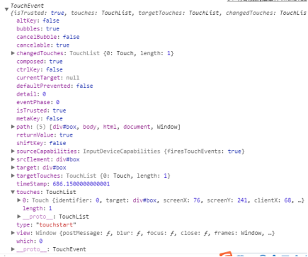
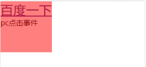
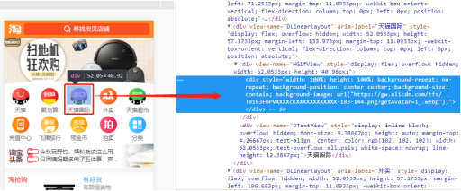
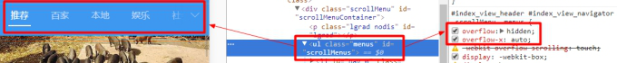
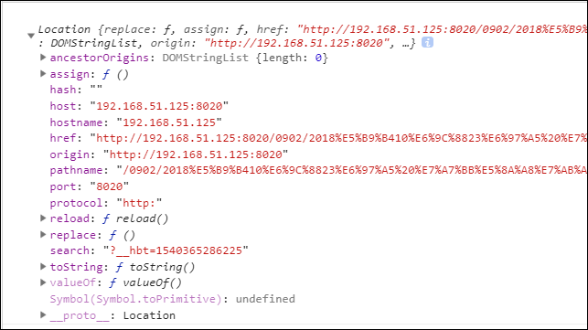

原文连接:https://www.cnblogs.com/rope/p/10696357.html
一、移动端默认样式
·IOS和Android下触摸元素时出现半透明灰色遮罩
a,input,button{
-webkit-tap-highlight-color: transparent;
}
·IOS按钮圆角的问题
button,input{
border-radius: 0;
-webkit-appearance: none;
}
·上下拉动滚动条时卡顿、慢
body {
-webkit-overflow-scrolling: touch;
overflow-scrolling: touch;
}
·禁止复制、选中文本
*{
-webkit-user-select: none;
-moz-user-select: none;
-khtml-user-select: none;
user-select: none;
}
·旋转屏幕时，字体大小调整的问题
html, body, form, fieldset, p, div, h1, h2, h3, h4, h5, h6 {
-webkit-text-size-adjust:100%;
}二、移动端事件
2.1 基本使用
PC端事件仍然可以在移动端使用不过会存在一些问题，一会我们来阐述。
那么移动端也有移动端专有的事件。

touchstart：当用户手指触摸到的触摸屏的时候触发。事件对象的 target 就是touch 发生位置的那个元素。
touchmove：当用户在触摸屏上移动触点(手指)的时候，触发这个事件。一定是先要触发touchstart事件，再有可能触发 touchmove 事件。
touchend：当用户的手指抬起的时候，会触发 touchend 事件。如何用户的手指从触屏设备的边缘移出了触屏设备，也会触发 touchend 事件。
touchcancel：一般用于保存现场数据。比如：正在玩游戏，如果发生了 touchcancel 事件，则应该把游戏当前状态相关的一些数据保存起来。
基本语法：
<div></div>
<script type="text/javascript">
var oDiv = document.getElementsByTagName("div")[0];
//DOM0级事件-时好时坏
oDiv.ontouchend = function(){
this.innerText += "手抬起"
}
//DOM2级事件
//oDiv.addEventListener(事件名称(不加on),事件处理函数,是否捕获)
oDiv.addEventListener("touchstart",function(){
this.innerHTML += "DOM2级<br/>"
},false)
</script>2.2 事件对象
当给某个元素加上了事件绑定函数之后，事件函数默认的第一个参数就是事件对象。
事件对象：当用户在浏览器下触发了某个行为，事件对象会记录用户操作时一些细节信息。
注意：touchstart和touchmove事件中的event事件对象中有一个属性是touches是数组，里面封装了每个手指的信息，包括手指的位置、手指的粗细、手指力度（iPhone6s以上提供），都有以下截图数据：

web页面基本上都是1个手指，和app不一样。web页面一般没有捏合、旋转操作。都是一根手指。
|
event.touches[0] |
|
1 touches 表示当前跟踪的触摸操作的touch对象的数组 2 targetTouches 特定于事件目标的touch对象数组 3 changeTouches 表示自上次触摸以来发生了什么改变的touch对象数组 |
touchend事件比较特殊，离开的时候能获取到最终的信息。
touches属性是一个数组，它表示是现在仍然在屏幕上的手指
changedTouches属性也数组，表示离开的手指信息，离开时会被push进入数组，并且保留最终的信息。
2.3touch对象详解之位置尺寸
每个touch对象包含的属性如下：
|
1 clientX：触摸目标在视口中的x坐标。 2 clientY：触摸目标在视口中的y坐标。 3 pageX：触摸目标在页面中的x坐标。 4 pageY：触摸目标在页面中的y坐标。 5 screenX：触摸目标在屏幕中的x坐标。 6 screenY：触摸目标在屏幕中的y坐标。 7 target：触目的DOM节点目标。 8 identifier：标识触摸的唯一ID。 |
2.4事件点透
2.4.1现象
移动端的点透：当上层元素发生点击的时候，下层元素也有点击（焦点）特性，在300ms之后，如果上层元素消失或者隐藏，目标点就会“漂移”到下层元素身上，就会触发点击行为。
<a href="http://baidu.com">百度一下</a>
<p>pc点击事件</p>
<div></div>
<script type="text/javascript">
//pc端事件是可以在移动端使用的 但是存在一些问题(事件点透)-pc端事件比移动端事件慢300ms
var oDiv = document.getElementsByTagName("div")[0];
var oP = document.getElementsByTagName("p")[0];
oP.onclick = function(){
this.style.color = "orange";
}
oDiv.addEventListener("touchend",function(){
this.style.display = "none";
},true);
</script>
如果我们在百度一下 pc点击事件上方进行点击会发现当红色区域隐藏后还会触发其自身的事件。
这种现象就是事件点透。
2.4.2 成因
我们上面说过，移动设备能够响应click事件，不过比较慢，这是为什么？
因为click事件触发之后，要等200ms到300ms左右，因为浏览器有一些默认的手指快捷操作，比如：快速双击两次屏幕视口会放大，弹出辅助菜单等等。
大家用手机上网的时候，尤其看一些PC端网站，双击屏幕，当前视口就变大了。
本质上：PC端事件比移动端的事件略慢，大概是在300ms左右。所以我们也称这种现象为300毫秒延迟。
2.4.3解决方案
下层不再使用具有点击特性的元素，获取取消具有点击特性元素的属性，并且使用移动端事件。

比如我们看移动端淘宝，他在导航区域就没有使用a标签而是全部使用div。
因为淘宝不再担心优化问题，而我们做网站时是特别看重优化问题的，所以我们不能全部使用div，那么我们的解决方案是：把a标签的href属性去掉，用一个自定义的属性来存储url，并且通过js进行事件触发动态跳转页面。
代码如下：
<nav>
<ul>
<li><a data-href="http://baidu.com">百度</a></li>
<li><a data-href="http://163.com">163</a></li>
<li><a data-href="http://qq.com">腾讯</a></li>
</ul>
<nav>
<script type="text/javascript">
var aS = document.querySelectorAll("a");
for(var i=0;i<aS.length;i++){
aS[i].addEventListener("touchstart",function(){
//页面跳转-window.location.href
//把被点击的a的自定义属性拿过来 然后复制就好
window.location.href = this.getAttribute("data-href");
},true)
}
</script>三、惯性抛掷
拖拽后根本停不下来，有惯性，会慢慢停下来，有两种方法：
方法一： overflow:auto 很智能的把移动的内容就变成可以滑动、抛掷货惯性的了;

触摸的时候有颜色的变化：(iPhone和iPad)
-webkit-tap-highlight-color:#00FF3E;
nav{
width:100%;height:50px;padding:20px 0;
background:#FF6969;overflow:hidden; overflow-x:auto;
}
nav ul{width:99999px; }
nav ul li{float:left;margin-right:10px;line-height:50px; }
<nav>
<ul>
<li>栏目栏目1</li>
<li>栏目栏目2</li>
<li>栏目栏目3</li>
...
</ul>
</nav>方法二： swiper
<!DOCTYPE html>
<html lang="zh">
<head>
<meta charset="UTF-8" />
<meta name="viewport" content="width=device-width, initial-scale=1.0" />
<meta http-equiv="X-UA-Compatible" content="ie=edge" />
<title>Document</title>
<link rel="stylesheet" type="text/css" href="css/swiper.css"/>
<style type="text/css">
*{
margin: 0;
padding: 0;
list-style: none;
}
nav{
background-image: linear-gradient(to right,#fff,deepskyblue,#fff);
}
li{
height: 40px;
line-height: 40px;
text-align: center;
}
</style>
</head>
<body>
<nav class="swiper-container">
<ul class="swiper-wrapper">
<li class="swiper-slide">首页</li>
<li class="swiper-slide">国内</li>
<li class="swiper-slide">国际</li>
<li class="swiper-slide">军事</li>
<li class="swiper-slide">财经</li>
<li class="swiper-slide">娱乐</li>
<li class="swiper-slide">体育</li>
<li class="swiper-slide">互联网</li>
<li class="swiper-slide">科技</li>
<li class="swiper-slide">游戏</li>
<li class="swiper-slide">个性推荐</li>
<li class="swiper-slide">女人</li>
<li class="swiper-slide">汽车</li>
<li class="swiper-slide">房产</li>
</ul>
<div class="swiper-scrollbar"></div>
</nav>
<script src="js/swiper.js" type="text/javascript" charset="utf-8"></script>
<script type="text/javascript">
new Swiper(".swiper-container",{
//具体的配置项
slidesPerView: 5,
scrollbar: {
el: '.swiper-scrollbar',
dragSize: 50
},
})
</script>
</body>
</html>四、swiper
开源(开放源码)=>代码健壮性
免费
布局可以自己写亦可以仿照他们的
使用：
1.首先加载插件，需要用到的文件有swiper.min.js和swiper.min.css文件。可下载Swiper文件或使用CDN。
<!DOCTYPE html>
<html>
<head>
...
<link rel="stylesheet" href="path/to/swiper.min.css">
</head>
<body>
...
<script src="path/to/swiper.min.js"></script>
</body>
</html>
2.HTML内容。
<div class="swiper-container">
<!--轮播图-->
<div class="swiper-wrapper">
<div class="swiper-slide">Slide 1</div>
<div class="swiper-slide">Slide 2</div>
<div class="swiper-slide">Slide 3</div>
</div>
<!-- 下面的点点点 -->
<div class="swiper-pagination"></div>
<!-- 左右按钮 -->
<div class="swiper-button-prev"></div>
<div class="swiper-button-next"></div>
<!-- 如果需要滚动条 -->
<div class="swiper-scrollbar"></div>
</div>
导航等组件可以放在container之外
3.初始化Swiper：最好是挨着</body>标签
<script>
var mySwiper = new Swiper ('.swiper-container/选择器', {
direction: 'vertical',/*水平or垂直*/
loop: true,/*无缝轮播*/
// 如果需要分页器
pagination: {
el: '.swiper-pagination',
},
// 如果需要前进后退按钮
navigation: {
nextEl: '.swiper-button-next',
prevEl: '.swiper-button-prev',
},
// 如果需要滚动条
scrollbar: {
el: '.swiper-scrollbar',
},
})
</script> 五、BOM之hash、search
5.1 认识location对象

hash：#后面的我们称之为hash
Host：主机
Hostname：主机名
Href：地址
Port：端口号
Search：?后面的我们称之为search|他会刷新网页